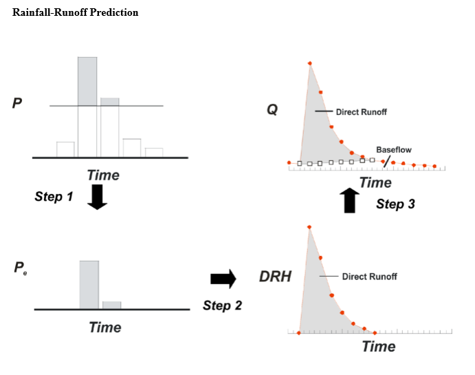
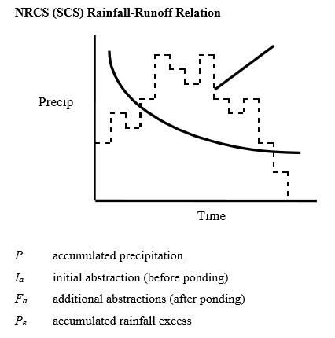

3/1/2019 Notes¶
NRCS (SCS) Runoff Method¶
Water Balance:
\(P = P_{e} + I_{a} + F_{a}\)
\(P_{e} = P - I_{a} - F_{a}\) while \(P \geq I_{a}\)
Define:
- \(S\) as the potential maximum retention storage. \(F_{a}\) is a thought of as a fraction of the storage, \(S\), \(\frac{F_{a}}{S}\)
This means:
\(\frac{F_{a}}{S} = \frac{P_{e}}{P-I_{a}}\)
Note
The above is the basis as the SCS Assumption.
Substituting and solving…
\[\begin{split}P_{e} = \begin{array}{cc}
\{ &
\begin{array}{cc}
0 & P \leq I_{a} \\
{\frac{(P-I_{a})^2}{P-I_{a} + S}} & P \geq I_{a} \\
\end{array}
\end{array}\end{split}\]
Note
A common SCS assumption \(I_{a} = 0.2 \times S\). Model becomes 1 parameter model of :math:`S`.
\(S\) is abstracted/related to the runoff curve number, \(CN\), which \(0<CN<100\).
Note
\(S = \frac{1000}{CN} - 10\)
NOW WE DO AN EXAMPLE!!! WOOOOOOOH